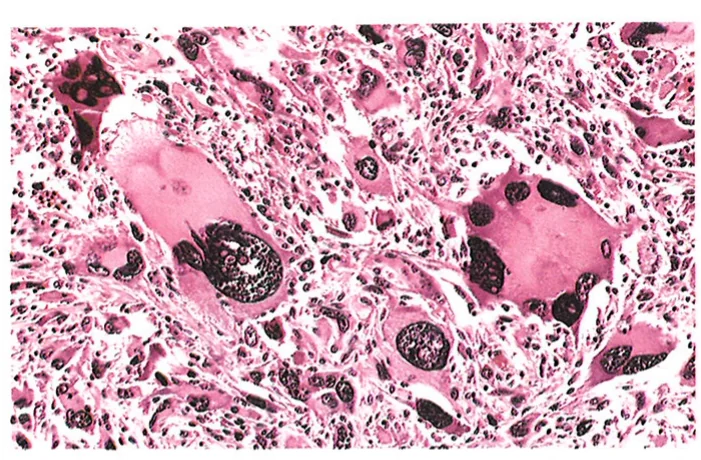
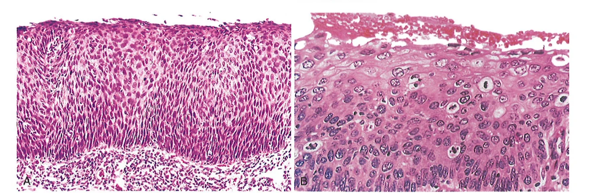
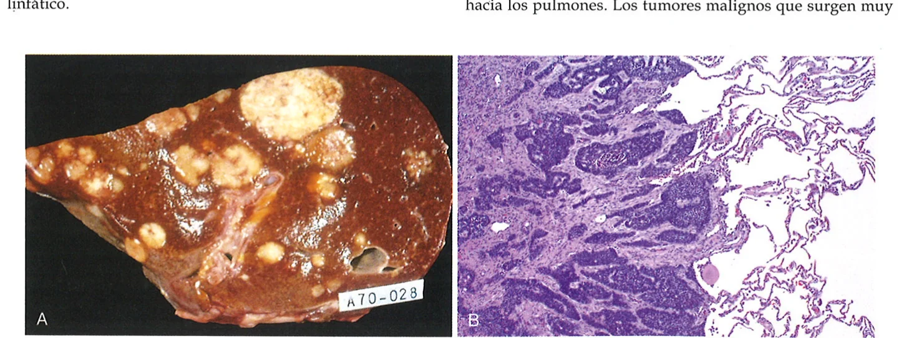
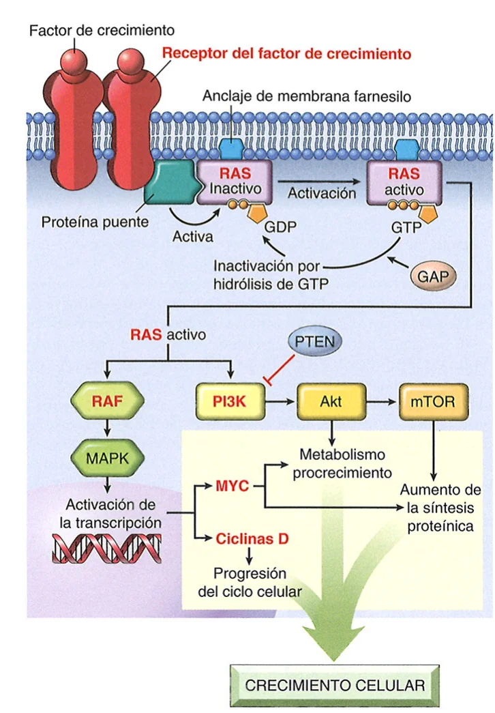
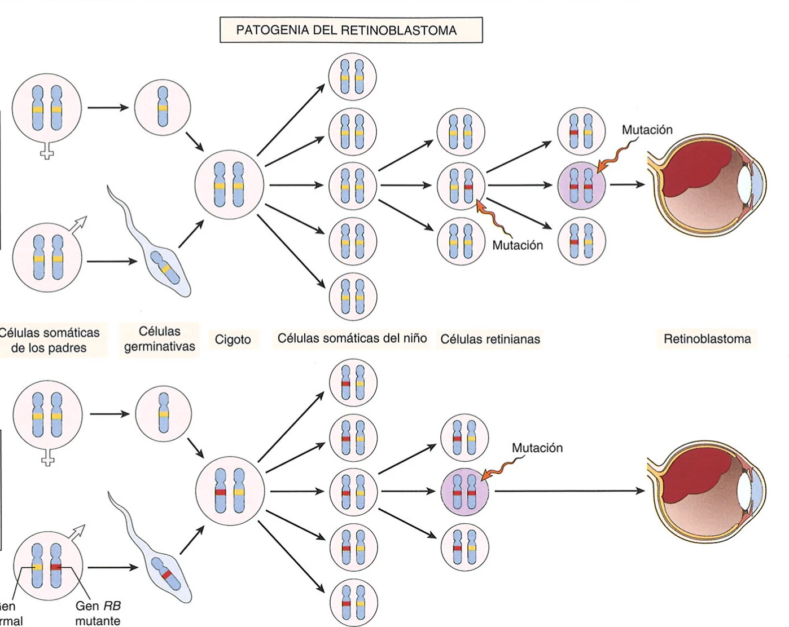
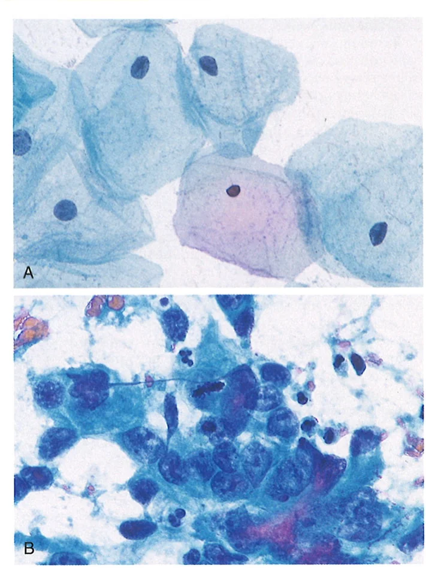

Qué cubre esta guía
Este resumen del Certamen 1 se redactó antes de adoptar la cita por página; se publica sin reescribirlo. El Manual del Certamen 1 incluye el índice tema-clase-Robbins y las fuentes.
Lo esencial en 60 segundos
- Neoplasia: trastorno genético clonal con parénquima y estroma; benigno vs maligno se define por diferenciación, invasión local y metástasis, no por velocidad de crecimiento.
- Carcinogenia multietápica: mutación iniciadora, luego mutaciones conductoras (dominantes en oncogenes) y pasajeras; supresores se pierden de forma recesiva (dos golpes de Knudson).
- Ocho características distintivas (Hanahan y Weinberg): señales de crecimiento, evasión de inhibidores, efecto Warburg, evasión de apoptosis, replicación ilimitada, angiogenia, invasión/metástasis y evasión inmunitaria; habilitadoras: inestabilidad genómica e inflamación.
- Diseminación: carcinomas vía linfática, sarcomas vía hematógena (hígado y pulmón); siembra en cavidades con seudomixoma peritoneal; ~30% de tumores sólidos ya metastásicos al diagnóstico.
- Eje RB (G1/S) y TP53 (guardián del genoma: arresto, senescencia o apoptosis) inactivados en la mayoría de los cánceres; VPH bloquea ambos con E7 y E6.
- Clínica: caquexia mediada por TNF, IL-1 e IL-6; síndromes paraneoplásicos en ~10%; estadificación TNM con creciente componente molecular.
Ideas clave
- Una neoplasia es un trastorno genético del crecimiento celular, desencadenado por mutaciones adquiridas o, menos frecuentemente, heredadas, que afectan a una sola célula y a su descendencia clonal. Los tumores son clonales y constan de dos componentes: parénquima (células tumorales) y estroma reactivo (tejido conjuntivo, vasos sanguíneos y células inmunitarias).
- La distinción entre tumor benigno y maligno se basa en la diferenciación (anaplasia), la invasión local y la metástasis; la velocidad de crecimiento no discrimina de forma fiable.
- El daño genético no letal está en el corazón de la carcinogenia. La célula iniciada adquiere de forma escalonada mutaciones conductoras y acumula muchas mutaciones pasajeras; el tumor evoluciona por selección darwiniana (progresión tumoral) y puede generar subclones resistentes al tratamiento.
- Los tumores malignos presentan ocho características distintivas: autosuficiencia en señales de crecimiento, insensibilidad a la inhibición del crecimiento, metabolismo alterado (efecto Warburg), evasión de la apoptosis, potencial replicativo ilimitado, angiogenia sostenida, capacidad de invadir y metastatizar y evasión de la vigilancia inmunitaria. Dos características habilitadoras las aceleran: inestabilidad genómica e inflamación promovida por el tumor.
- Dos grandes grupos de genes causales: oncogenes (ganancia de función, comportamiento dominante) y genes supresores de tumores (pérdida de función, generalmente recesiva: ambos alelos; excepción: haploinsuficiencia). También participan genes de reparación del ADN.
- La mayoría de los tumores malignos son esporádicos (aproximadamente el 95%); los factores medioambientales dominan el riesgo y la edad es una influencia importante.
- Los carcinomas se diseminan típicamente por vía linfática; los sarcomas por vía hematógena. La diseminación a distancia confirma malignidad.
- La carcinogenia es un proceso en múltiples etapas: ningún oncogén ni microorganismo causa por sí solo un tumor; se requieren mutaciones complementarias acumuladas.
Nomenclatura
- Neoplasia significa nuevo crecimiento; la oncología (en griego oncos = tumor) es el estudio de los tumores. Tumor, que originalmente describía una hinchazón inflamatoria, hoy se equipara a neoplasia.
- El estroma es determinante para el crecimiento y la diseminación. El estroma colágeno abundante estimulado por el tumor se llama desmoplasia; los tumores desmoplásicos, por ejemplo algunos cánceres de mama, son duros (escirros).
Tumores benignos
- Permanecen localizados en su sitio de origen y suelen ser susceptibles de extirpación; el paciente generalmente sobrevive. Excepción: en lugares vulnerables (cerebro), incluso un tumor benigno puede ser mortal.
- Mesenquimatosos: sufijo -oma (fibroma, condroma, lipoma).
- Epiteliales: adenoma (origen glandular, aunque no formen glándulas), papiloma (proyecciones verrugosas o digitiformes sobre superficies epiteliales), cistoadenoma (gran masa quística, p. ej., en ovario), cistoadenoma papilar (proyecciones papilares hacia espacios quísticos). Si una neoplasia produce una proyección muy visible por encima de una superficie mucosa se llama pólipo; si posee tejido glandular, pólipo adenomatoso.
Tumores malignos
- Pueden invadir y destruir estructuras adyacentes y metastatizar; colectivamente se llaman cánceres (del latín, cangrejo).
- Sarcomas: malignos de tejidos mesenquimatosos sólidos (fibrosarcoma, condrosarcoma).
- Leucemias (literalmente, sangre blanca) y linfomas: tumores de células formadoras de sangre y de linfocitos o sus precursores.
- Carcinomas: malignos epiteliales. Si se asemejan al epitelio escamoso estratificado, carcinoma epidermoide; si crecen en patrón glandular, adenocarcinoma. El órgano de origen se añade si se conoce (adenocarcinoma de células renales, carcinoma epidermoide broncógeno). En aproximadamente el 2% de los casos el origen es desconocido: tumor maligno indiferenciado.
Tumores mixtos, teratomas, hamartomas y coristomas
- Tumor mixto: más de una línea de diferenciación a partir de un solo clon. Ejemplo clásico: adenoma pleomorfo de la glándula salival, con elementos epiteliales dispersos en un estroma mixoide que puede contener cartílago u hueso. Cuando es maligno se llama tumor mixto maligno de origen salival.
- La gran mayoría de las neoplasias derivan de una sola capa germinativa. Excepción: el teratoma, de células germinativas totipotenciales de gónadas (a veces de restos embrionarios en la línea media), con tejidos maduros o inmaduros de más de una capa germinativa (a veces las tres). El teratoma quístico de ovario (quiste dermoide) se diferencia sobre todo por líneas ectodérmicas: piel, pelo, glándulas sebáceas, estructuras dentales.
- Nombres inadecuados pero arraigados: linfoma, melanoma, mesotelioma y seminoma designan neoplasias malignas pese a sugerir benignidad.
- Hamartoma: masa desorganizada compuesta por células autóctonas del tejido afectado; la mayoría tienen aberraciones cromosómicas clonales adquiridas por mutación somática, por lo que hoy se consideran neoplasias benignas.
- Coristoma: resto de células heterotópicas fuera de lugar (p. ej., tejido pancreático bien organizado en la submucosa gástrica o del intestino delgado). No es neoplasia, aunque el nombre lo sugiere.
Características de las neoplasias benignas y malignas
| Característica | Benignos | Malignos |
|---|---|---|
| Diferenciación y anaplasia | Bien diferenciados; estructura a menudo habitual del tejido de origen | De moderados a anaplásicos (sin diferenciación); estructura a menudo atípica |
| Velocidad de crecimiento | Habitualmente progresiva y lenta; pueden detenerse o retroceder; mitosis infrecuentes y normales | Errática, puede ser lenta o rápida; figuras mitóticas pueden ser numerosas y anormales |
| Invasión local | Masas cohesivas, expandibles y bien delimitadas; no invaden ni infiltran | Localmente invasivos, infiltran el tejido circundante; a veces engañosamente cohesivos y expansivos |
| Metástasis | Ausentes | Frecuentes; más probables en tumores grandes e indiferenciados |
Diferenciación y anaplasia
- Diferenciación: grado en que las células parenquimatosas neoplásicas se asemejan a las normales correspondientes, morfológica y funcionalmente. La ausencia de diferenciación se denomina anaplasia.
- Los tumores benignos están bien diferenciados (el lipoma puede ser irreconocible como tumoral salvo por el crecimiento en masa discreta). La malignidad puede revelarse más por la infiltración y la metástasis que por la citología: los adenocarcinomas tiroideos bien diferenciados forman folículos de aspecto normal, y algunas células de carcinomas epidermoides son idénticas a las normales. En el otro extremo, los tumores muy anaplásicos muestran poca o ninguna diferenciación, apariencia altamente predictiva de comportamiento maligno. Entre ambos extremos están los moderadamente diferenciados.
- Cambios morfológicos reveladores de malignidad:
- Pleomorfismo: variación del tamaño y la forma de células y núcleos; incluye células gigantes tumorales (núcleo polimórfico único o varios núcleos hipercromáticos grandes; no confundir con células de Langhans inflamatorias ni con células gigantes por cuerpo extraño, derivadas de macrófagos).
- Morfología nuclear anormal: núcleos desproporcionadamente grandes, relación núcleo-citoplasma que puede acercarse a 1:1 (normal 1:4 a 1:6), núcleo de forma variable e irregular, cromatina gruesamente agrupada o adherida a la membrana nuclear, hipercromatismo, nucléolos anormalmente grandes.
- Mitosis: los tumores indiferenciados contienen muchas mitosis (alta tasa proliferativa). La presencia de mitosis no equivale a malignidad (epitelio intestinal en recambio rápido, hiperplasias). Más importantes son las figuras mitóticas anómalas y atípicas.
- Pérdida de polaridad: orientación anormal entre las células anaplásicas y respecto de estructuras de soporte como las membranas basales; crecimiento desorganizado en capas o masas.
- Otros: estroma vascular a menudo insuficiente; muchos tumores malignos de crecimiento rápido desarrollan áreas de necrosis isquémica.

Figura 7.9. Rabdomiosarcoma (tumor pleomorfo del músculo esquelético): marcado pleomorfismo celular y nuclear, núcleos hipercromáticos y células gigantes tumorales. Robbins y Cotran, Patología estructural y funcional, 10ª ed., Elsevier España, 2021, p. 272. Ver créditos - Función: los tumores bien diferenciados suelen conservar funciones normales (tumores endocrinos que secretan hormonas detectables en sangre; carcinoma epidermoide que sintetiza queratina; carcinoma hepatocelular que sintetiza bilis). Los tumores anaplásicos suelen perder las funciones del tejido de origen, pero a veces adquieren funciones nuevas: algunos carcinomas broncógenos sintetizan corticotropina, hormona paratiroidea, insulina o glucagón, dando lugar a síndromes paraneoplásicos.

Metaplasia, displasia y carcinoma in situ
- Metaplasia: reemplazo de un tipo de célula por otro tipo, casi siempre asociado a lesión con reparación y regeneración tisular. Ejemplos: esófago de Barrett (el reflujo gastroesofágico daña el epitelio escamoso, sustituido por epitelio glandular más adecuado para el ambiente ácido), metaplasia escamosa del epitelio bronquial en fumadores crónicos. El epitelio metaplásico es propenso a la transformación maligna.
- Displasia: crecimiento desordenado; se encuentra principalmente en epitelio. Presenta pleomorfismo, núcleos grandes hipercromáticos con relación núcleo-citoplasma elevada, desorden arquitectural y pérdida de diferenciación ordenada; en el epitelio escamoso la maduración desde la capa basal hasta la superficie puede fallar, y las mitosis se observan en todo el epitelio, no solo en la capa basal.
- Carcinoma in situ: cuando la displasia es grave y afecta a todo el espesor del epitelio sin atravesar la membrana basal. Se observa en piel, mama, vejiga y cérvix. Presenta todas las características citológicas de malignidad y, sin tratamiento, tiene alta probabilidad de progresión a tumor invasivo; puede persistir años antes de infiltrar.
- La displasia es reversible si se elimina la causa desencadenante (al menos las moderadas); no siempre progresa. Algunas mutaciones tumorales pueden estar presentes en displasias leves. En un campo con epitelio metaplásico, no todo el epitelio metaplásico es displásico.


Invasión local
- Los tumores benignos, que crecen y se expanden lentamente, desarrollan una cápsula de tejido fibroso: matriz extracelular (MEC) depositada por células del estroma como fibroblastos, activados por el daño hipóxico de la presión del tumor en expansión. Crea un plano tisular que hace el tumor palpable, móvil y fácilmente extirpable por enucleación. Excepción: los hemangiomas a menudo no están encapsulados, infiltran el sitio (dermis, hígado) y pueden ser irresecables si son extensos.
- Los tumores malignos están mal delimitados, sin planos de división. Los de crecimiento lento pueden desarrollar una cápsula aparente (seudoencapsulación), pero la histología muestra hileras de células tumorales que penetran el margen e infiltran estructuras adyacentes (patrón tipo cangrejo). Obliga a extirpar un margen amplio de tejido aparentemente normal.
- La invasividad, junto con el desarrollo de metástasis, es el factor que mejor discrimina entre benigno y maligno.
Metástasis
- Metástasis: diseminación de un tumor a sitios físicamente discontinuos con el primario; señala inequívocamente un tumor como maligno. La invasividad permite a las células penetrar en vasos sanguíneos, vasos linfáticos y cavidades corporales.
- Algunos malignos casi nunca metastatizan: los gliomas (células gliales del sistema nervioso central) y los carcinomas basocelulares de la piel, que invaden de forma precoz. Invasividad y metástasis son propiedades separables.
- Las leucemias y linfomas (tumores líquidos) proceden de células que normalmente circulan; a menudo están diseminados al diagnóstico y siempre se consideran malignos, a diferencia de los tumores sólidos.
- Aproximadamente el 30% de los tumores sólidos (excluidos los cutáneos no melanomatosos) se presentan como enfermedad metastásica. La probabilidad de metástasis se correlaciona con la falta de diferenciación, la invasión agresiva, el crecimiento rápido y el gran tamaño, con innumerables excepciones.
- La diseminación metastásica reduce notablemente la posibilidad de curación; además, muchos tumores ya se han diseminado en el momento del diagnóstico inicial.


Vías de propagación
Las tres vías: siembra directa en cavidades o superficies corporales, diseminación linfática y diseminación hematógena. La diseminación yatrógena por instrumental quirúrgico es poco común (por eso nunca se biopsian masas testiculares).
- Siembra de cavidades y superficies: ocurre cuando la neoplasia maligna penetra en un campo abierto natural sin barreras físicas. La cavidad más afectada es la peritoneal (también pleural, pericárdica, subaracnoidea y articular). Es característica de los carcinomas de ovario; las células pueden permanecer en la superficie de las vísceras sin penetrar. Los carcinomas apendiculares u ováricos secretores de moco llenan el peritoneo con masa gelatinosa: seudomixoma peritoneal.
- Diseminación linfática: la vía más común para la diseminación inicial de los carcinomas (los sarcomas también la usan a veces). Los tumores no contienen vasos linfáticos funcionales; bastan los vasos linfáticos de los márgenes del tumor infiltrante. El patrón sigue las vías naturales del drenaje: carcinoma de mama (cuadrantes superiores externos) a ganglios axilares y luego infraclaviculares y supraclaviculares; carcinoma pulmonar central a ganglios traqueobronquiales y mediastínicos perihiliares. Los ganglios locales pueden saltarse (metástasis saltatorias). En el cáncer de mama el análisis de los ganglios axilares determina pronóstico y tratamiento; para evitar la morbilidad de la disección axilar se usa la biopsia del ganglio centinela (el primer ganglio del territorio regional que recibe la linfa del primario), con marcadores radiomarcados o pigmentos. Los ganglios agrandados no siempre albergan metástasis (la respuesta inmunitaria frente al tumor puede producir hiperplasia); solo el examen microscópico lo define.
- Diseminación hematógena: característica de los sarcomas, aunque también en carcinomas. La penetración de vasos pequeños en el tumor primario es un dato ominoso asociado a esta vía. Suelen afectarse venas pequeñas; las arterias son más resistentes. Ocurre diseminación arterial cuando las células atraviesan lechos capilares pulmonares o derivaciones arteriovenosas, o cuando tumores pulmonares producen émbolos tumorales. Con la invasión venosa, las células se detienen en el primer lecho capilar: por eso el hígado y los pulmones son los más afectados. Los tumores cerca de la columna vertebral embolizan por el plexo paravertebral, produciendo metástasis vertebrales frecuentes de carcinomas de tiroides y de próstata. Algunos carcinomas crecen dentro de venas grandes: el de células renales invade la vena renal y alcanza la vena cava inferior hasta el corazón derecho; el hepatocelular penetra en radículas portales y hepáticas pese a lo cual puede no metastatizar de forma generalizada.
Epidemiología de los tumores malignos
Impacto global
- En 2018 los tumores malignos fueron responsables de más de 9,5 millones de fallecimientos en el mundo, casi 1 de cada 6 muertes totales. Debido al aumento del tamaño y la edad de la población se prevé hacia 2030 unos 21,4 millones de casos y 13,2 millones de muertes.
- Tumores más comunes: en hombres, próstata, pulmón y colon/recto; en mujeres, mama, pulmón y colon/recto. Los cánceres de pulmón, mama (en mujeres), próstata y colon/recto constituyen más del 50% de los diagnósticos y de las muertes por tumores en EE. UU.
- La mortalidad ajustada por edad disminuyó aproximadamente un 20% en hombres desde 1990 y un 10% en mujeres desde 1991. La reducción del uso de tabaco explica la del cáncer de pulmón; la mejora en detección y tratamiento redujo la del colorrectal, la de mama en mujeres y la de próstata. La citología cervicovaginal explica en gran parte la fuerte disminución de las muertes por cáncer de cérvix en EE. UU. en la última mitad de siglo.
- En mujeres, aunque los carcinomas de mama tienen una frecuencia 2,5 veces superior a los de pulmón, el cáncer de pulmón causa ahora más muertes.
- Las personas hispanas en EE. UU. tienen menor frecuencia de los tumores comunes de la población caucásica no hispana y mayor incidencia de cáncer de estómago, hígado, cérvix y vesícula biliar, así como de ciertas leucemias.
Factores medioambientales
Son los factores de riesgo dominantes para la mayoría de los tumores malignos. Evidencias: el seguimiento del cáncer de pulmón con los cambios en el hábito de fumar; la fuerte caída del cáncer de estómago durante el siglo XX y el aumento reciente del de hígado (obesidad y hepatitis B y C); la amplia variación geográfica de la incidencia (el tumor más común del hombre varía según la región). Factores establecidos:
| Factor | Relación con tumores |
|---|---|
| Microorganismos infecciosos | Causan directa o indirectamente cerca del 15% de los tumores del mundo; carga tres veces mayor en el mundo en desarrollo; VPH en carcinomas de cérvix y tumores de cabeza y cuello |
| Tabaquismo | El factor ambiental más importante de muerte prematura en EE. UU.; implica boca, faringe, laringe, esófago, páncreas y vejiga, y cerca del 90% de los cánceres de pulmón |
| Alcohol | Carcinoma de orofaringe (salvo labio), laringe, esófago; por cirrosis alcohólica, carcinoma hepatocelular; efecto sinérgico con tabaco |
| Dieta | La dieta rica en grasas y pobre en fibra se ha relacionado con el cáncer de colon; la variación geográfica del colorrectal, próstata y mama se ha atribuido a la dieta |
| Obesidad | Aproximadamente el 14% de las muertes por tumores en hombres y el 20% en mujeres se asocian a la obesidad |
| Antecedentes reproductivos | La exposición acumulada a estrógenos sin oposición de progesterona aumenta el riesgo de cáncer de mama y de endometrio |
| Carcinógenos ambientales | Rayos ultravioleta, polución, arsénico en aguas, metotrexato, asbestos, carne a la brasa, dieta rica en grasas (ver carcinogenia química) |
Edad
- La mayoría de los carcinomas aparecen en mayores de 55 años; los tumores malignos son la principal causa de muerte en mujeres de 40 a 79 años y hombres de 60 a 79. La incidencia creciente con la edad se explica probablemente por la acumulación de mutaciones somáticas y por la disminución de la capacidad inmunitaria.
- Los tumores malignos causan aproximadamente el 10% de las muertes de niños menores de 15 años en EE. UU., solo superadas por los accidentes. Los tumores pediátricos se deben en mayor medida a mutaciones hereditarias (particularmente en genes supresores) y menos a carcinógenos ambientales; por eso los carcinomas son muy infrecuentes en niños. La leucemia aguda y las neoplasias del sistema nervioso central causan aproximadamente el 60% de las muertes infantiles por tumores. Entre las neoplasias comunes de la infancia están los tumores de células azules redondas pequeñas: neuroblastoma, tumor de Wilms, retinoblastoma, leucemia linfoblástica aguda y rabdomiosarcoma.
Inflamación crónica, lesiones precursoras e inmunodeficiencia
- Inflamación crónica: relación propuesta por Virchow (1863). Ejemplos de la tabla 7.4: asbestosis y silicosis (mesotelioma, carcinoma pulmonar); enfermedad inflamatoria intestinal (carcinoma colorrectal); liquen escleroso (carcinoma escamoso vulvar); pancreatitis (carcinoma de páncreas); colecistitis crónica (cáncer de vesícula biliar); esofagitis por reflujo, esófago de Barrett (carcinoma esofágico); síndrome de Sjögren, tiroiditis de Hashimoto (linfoma MALT); opistorquiasis (colangiocarcinoma, carcinoma de colon); H. pylori (adenocarcinoma gástrico, linfoma MALT); hepatitis B y C (carcinoma hepatocelular); osteomielitis con senos que drenan (carcinoma cutáneo de seno); virus del papiloma humano, cervicitis crónica (carcinoma cervical); esquistosomiasis con cistitis crónica (carcinoma de vejiga). Mecanismo: proliferación compensadora que repara el daño, posible aumento de la reserva de células madre tisulares y producción por las células inmunitarias de especies reactivas de oxígeno con daño del ADN. El diagnóstico y tratamiento de la gastritis por H. pylori alivia este riesgo de cáncer gástrico.
- Lesiones precursoras: cambios morfológicos localizados que identifican un campo de epitelio con mayor riesgo de transformación; adoptan forma de hiperplasia, metaplasia o displasia. Ejemplo clásico hiperplásico: la hiperplasia endometrial por estimulación estrogénica sostenida. Ejemplo de neoplasia benigna precursora: el adenoma velloso del colon, que progresa a cáncer en aproximadamente el 50% de los casos si no se trata. La mayoría de los tumores benignos se transforman de forma infrecuente (leiomioma, adenoma pleomorfo) o no se transforman en absoluto (lipoma).
- Inmunodeficiencia: los pacientes inmunodeprimidos, en particular con déficit de inmunidad de linfocitos T, tienen mayor riesgo de tumores, especialmente de los causados por virus oncógenos (linfomas, ciertos carcinomas, algunos sarcomas y proliferaciones seudosarcomatosas).
Predisposición genética
- En algunas familias los tumores son rasgo hereditario, generalmente por mutaciones de la línea germinal en un gen supresor de tumores. Aproximadamente el 95% de los tumores en EE. UU. son esporádicos; la evaluación de las contribuciones hereditarias es difícil por las interacciones complejas.
- Ejemplo de interacción: en mujeres portadoras de mutaciones de la línea germinativa en BRCA1 o BRCA2, el riesgo de cáncer de mama es casi 3 veces mayor en las nacidas después de 1940, quizás por cambios en los antecedentes reproductivos.
- Los factores genéticos también modulan carcinógenos ambientales: la variación (polimorfismos) de enzimas como el citocromo P-450 influye en la conversión de procarcinógenos en carcinógenos activos; un polimorfismo de un gen P-450 confiere susceptibilidad al cáncer de pulmón inducido por tabaquismo.
Bases moleculares de los tumores malignos: alteraciones genéticas y epigenéticas
Temas genómicos generales:
- El daño genético no letal está en el corazón de la carcinogenia. La causa puede ser ambiental (mutaciones adquiridas por virus, sustancias químicas o productos del metabolismo que dañan el ADN como las especies reactivas de oxígeno, o que alteran la expresión por vía epigenética, como los oncometabolitos), heredada en la línea germinal o espontánea y aleatoria.
- Los tumores son clonales: provienen de la expansión de una sola célula precursora dañada; todas las células del tumor comparten las mutaciones presentes en el momento de la transformación.
- Cuatro clases de genes son los principales objetivos de las mutaciones: protooncogenes promotores del crecimiento, genes supresores de tumores, genes responsables de la reparación del ADN y genes que gobiernan la apoptosis (menor muerte, mayor supervivencia).
- Las mutaciones activadoras de protooncogenes son de ganancia de función y los oncogenes resultan dominantes (basta una copia). Las mutaciones de genes supresores suelen ser de pérdida de función y comportarse como recesivas (ambos alelos); excepción: la haploinsuficiencia en la que la pérdida de un solo alelo basta.
- La primera mutación conductora es la mutación iniciadora, mantenida en todas las células posteriores. Ninguna parece transformadora por sí sola; el pródromo preclínico puede ser largo: en la leucemia linfoblástica aguda infantil se encuentran células con mutaciones iniciadoras en sangre hasta una década antes del diagnóstico. Esta persistencia sugiere origen en células con propiedades de células madre tumorales, con capacidad de autorrenovación.
- Las mutaciones que producen inestabilidad genómica elevan la frecuencia de mutaciones sin consecuencias fenotípicas, las mutaciones pasajeras (mucho más numerosas que las conductoras, que pueden llegar a ser centenas o miles). Otras mutaciones contribuyen interfiriendo las respuestas inmunitarias o alterando las interacciones con el estroma.
- Cuando el tumor se hace clínicamente evidente (masa de aproximadamente 1 g) ha pasado por un mínimo de 30 duplicaciones celulares. Durante la expansión surgen subclones genéticamente distintos que compiten por nutrientes y nichos; los más aptos dominan la masa tumoral (progresión tumoral). En estudios de secuenciación de carcinomas de células renales se identificaron mutaciones presentes en todos los sitios (propias de la célula fundadora) y mutaciones exclusivas de algunos sitios (adquiridas después), lo que permite construir árboles genealógicos tumorales. El tratamiento eficaz es una presión selectiva: los tumores que reaparecen tras el tratamiento casi siempre son resistentes a su readministración.
- Aberraciones epigenéticas: la metilación del ADN tiende a silenciar genes y las modificaciones de histonas potencian o inhiben la expresión. La metilación aberrante explica el silenciamiento de algunos genes supresores. A diferencia de las mutaciones, los cambios epigenéticos son posiblemente reversibles con fármacos.
Características distintivas de los tumores malignos
Ocho cambios fundamentales de la fisiología celular (modelo de Hanahan y Weinberg) y dos características habilitadoras:
- Autosuficiencia respecto de las señales de crecimiento (activación de oncogenes).
- Insensibilidad a las señales inhibidoras del crecimiento (inactivación de genes supresores).
- Metabolismo celular alterado (glucólisis aeróbica, efecto Warburg).
- Evasión de la apoptosis.
- Potencial replicativo ilimitado (evasión de la senescencia y la catástrofe mitótica).
- Angiogenia sostenida.
- Capacidad de invadir y metastatizar.
- Capacidad de eludir la respuesta inmunitaria del huésped. Habilitadoras: inestabilidad genómica e inflamación promovida por el tumor.
Autosuficiencia respecto de las señales de crecimiento: oncogenes
- Un oncogén es un gen mutado que causa crecimiento excesivo sin señales externas. Los oncogenes son versiones mutadas o sobreexpresadas de genes normales (protooncogenes) y codifican oncoproteinas constitutivamente activas y resistentes al control por señales externas.
- La señalización fisiológica por factores de crecimiento sigue estos pasos: unión del factor a su receptor específico; activación transitoria del receptor; transmisión de la señal por transductores citoplásmicos y segundos mensajeros; activación de factores de transcripción y cambios epigenéticos; expresión de genes del ciclo celular y de genes de supervivencia y de cambios metabólicos.
- Vías de señalización implicadas en tumores: receptor tirosina cinasa, receptor acoplado a proteína G, JAK/STAT, WNT, Notch, Hedgehog, TGF-β/SMAD y NF-κB.


Oncoproteinas y crecimiento celular
- Factores de crecimiento: acción normalmente paracrina. Algunas células tumorales sintetizan el factor al que responden (bucle autocrino): los glioblastomas expresan frecuentemente PDGF y su receptor PDGFR, y muchos sarcomas sobreexpresan TGF y su receptor (el receptor del factor de crecimiento epidérmico, EGFR).
- Receptores del factor de crecimiento (receptores tirosina cinasas, los más importantes en tumores): normalmente se activan de forma transitoria, pasan a estado dimérico activo y autofosforilan residuos de tirosina que reclutan RAS y PI3K. Se activan de forma constitutiva por mutaciones puntuales, reordenamientos o amplificaciones (tabla 7.5). Ejemplos de importancia clínica:
- ERBB1 (EGFR): mutaciones puntuales activadoras en un subconjunto de adenocarcinomas de pulmón; los tumores responden a inhibidores de EGFR. La resistencia aparece a menudo por otras mutaciones del EGFR que impiden la unión del fármaco o por amplificación de MET.
- ERBB2 (HER2): en cánceres de mama no se activa por mutación puntual sino por amplificación; sobreexpresión del receptor HER2. Responden bien a anticuerpos o fármacos que inhiben HER2, que además de bloquear el crecimiento inducen apoptosis y regresión tumoral.
- ALK: receptor tirosina cinasa que puede ser constitutivamente activo por reordenamiento. En un subconjunto de adenocarcinomas de pulmón, una deleción en el cromosoma 5 fusiona ALK con EML4; la proteína quimérica EML4-ALK tiene actividad tirosina cinasa constitutiva. Los inhibidores de EGFR y ALK producen respuestas similares en los adenocarcinomas de pulmón con estas lesiones, pero los tratamientos dirigidos no suelen ser curativos en tumores avanzados.
- RAS (genes HRAS, KRAS y NRAS): proteínas G pequeñas asociadas a membrana que alternan entre estado activo unido a GTP y estado inactivo unido a GDP. Las mutaciones puntuales de RAS constituyen el tipo más común de anomalía de protooncogenes en los tumores humanos: el 15 a 20% de todos los tumores; aproximadamente el 90% de los adenocarcinomas pancreáticos, alrededor del 50% de los cánceres de colon, endometrio y tiroides, y el 30% de los adenocarcinomas de pulmón y de las leucemias mieloides. Las proteínas activadoras de la GTPasa (GAP) aceleran la actividad GTPasa de RAS más de 1.000 veces, terminando la señal. Las mutaciones reducen la actividad GTPasa y RAS queda atrapado unido a GTP, enviando señales de crecimiento continuas. La pérdida de la GAP codificada por el gen NF1 produce el mismo efecto (neurofibromatosis tipo 1); NF1 actúa como supresor tumoral por regulación negativa de RAS.
- Cascadas distales a RAS: MAPK y PI3K/AKT.
- BRAF (serina/treonina cinasa): mutaciones activadoras en cerca del 100% de las leucemias de células peludas, el 60% de los melanomas y un porcentaje menor de otras neoplasias como los carcinomas de colon. Las mutaciones de miembros distales son menos comunes, lo que sugiere que las alteraciones en la parte superior de la cascada favorecen el crecimiento de forma más eficaz.
- PI3K/AKT: mutaciones de ganancia de función en aproximadamente el 30% de los carcinomas de mama; en otros casos la cascada queda sin freno por pérdida del regulador PTEN, supresor tumoral frecuentemente mutado en el carcinoma endometrial. AKT activa una cascada de serina/treonina cinasas y fosforila más de 150 proteínas, entre ellas reguladores clave de la síntesis de proteínas (mTOR) y de la apoptosis (BAD, factores de transcripción FOXO, MDM2 y IAP).
- Adicción a los oncogenes: las células tumorales pueden depender en gran medida de la actividad de una oncoproteina. Ejemplo: los inhibidores de BRAF producen respuestas en melanomas avanzados solo en tumores con mutación de BRAF; los melanomas con BRAF de tipo silvestre no responden. Esto subraya la necesidad de análisis molecular previo al tratamiento.
- En los tumores con mutaciones de RAS casi nunca hay mutaciones activadoras de los receptores tirosina cinasa (mutuamente excluyentes), lo que tiene consecuencias para los tratamientos dirigidos.
- Tirosina cinasas no receptoras: con frecuencia activadas por translocaciones que crean genes de fusión con actividad cinasa constitutiva. Ejemplo: en la leucemia mieloide crónica (LMC) y en un subconjunto de leucemias linfoblásticas agudas, el gen ABL se traslada desde el cromosoma 9 al 22 y se fusiona con BCR; la proteína BCR-ABL quimérica tiene actividad tirosina cinasa constitutiva, desencadenada por la autoasociación promovida por BCR. El tratamiento con inhibidores de BCR-ABL es un ejemplo clave de adicción a oncogenes, pero no cura: las infrecuentes células madre de la LMC portan el gen de fusión pero no dependen de sus señales para sobrevivir, por lo que el tratamiento debe continuarse indefinidamente, y de suspenderse reaparece la leucemia. Este hecho señala la posible resistencia de las células similares a células madre a los tratamientos dirigidos.
- Mutaciones puntuales activadoras de JAK2 (tirosina cinasa de la vía JAK/STAT) destruyen los dominios autorreguladores negativos; liberan a las células tumorales de su dependencia de factores de crecimiento hematopoyético como la eritropoyetina en varias neoplasias mieloides y han llevado al desarrollo de inhibidores de JAK2.
- Factores de transcripción: MYC, MYB, JUN, FOS y REL; MYC es el más frecuentemente afectado.
- MYC: gen de respuesta temprana inmediata inducido por la señalización RAS/MAPK. Sus funciones incluyen: activación de genes del crecimiento celular (ciclinas D) y del ARN ribosómico con mejora del ensamblaje de ribosomas; regulación al alza de la reprogramación metabólica y del efecto Warburg (enzimas glucolíticas y metabolismo de la glutamina); en algunos contextos, potenciación de la expresión de telomerasa; y contribución a la pluripotencialidad (MYC es uno de los factores capaces de reprogramar células somáticas en células madre pluripotenciales).
- Desregulación de MYC: translocación al locus del gen del receptor de antígeno en el linfoma de Burkitt y otros tumores de linfocitos B y T (los potenciadores de la inmunoglobulina impiden el control normal y causan sobreexpresión); amplificación del gen en cánceres de mama, colon y pulmón; amplificación de NMYC en neuroblastomas y de LMYC en tumores de células pequeñas del pulmón; aumento indirecto por señalización constitutiva de RAS/MAPK, Notch, Wnt (carcinoma de colon) o Hedgehog (meduloblastoma); polimorfismos de un solo nucleótido (SNP) en elementos potenciadores próximos, asociados a riesgo heredado de carcinoma de próstata y ovario y ciertas leucemias. Los tumores de crecimiento más rápido, como el linfoma de Burkitt, tienen las concentraciones más elevadas de MYC.
- Ciclinas y cinasas dependientes de ciclinas (CDK): la progresión del ciclo celular está coordinada por complejos CDK-ciclina que fosforilan dianas cruciales; las ciclinas activan y los inhibidores de CDK los silencian (tabla 7.6). Hay dos puntos de control principales del ciclo celular, en la transición G1/S y en la transición G2/M, regulados por un equilibrio de genes promotores y supresores y por sensores de daño del ADN. Los defectos del control G1/S son los más importantes porque además comprometen la reparación del ADN (fenotipo mutador).
- Ganancia de función: genes de ciclina D (D1, D2 y D3, funcionalmente intercambiables) desregulados por translocaciones (tumores linfoides) y amplificación (tumores sólidos); amplificación del gen CDK4 en melanomas, sarcomas y glioblastomas. Los inhibidores de CDK4 son eficaces en cánceres de mama avanzados con actividad excesiva de CDK4. Las mutaciones de otras CDK y de la ciclina E son poco frecuentes.
- Pérdida de función: de los inhibidores de CDK. p16 (CDKN2A): mutaciones de la línea germinal en el 25% de las familias propensas al melanoma; deleción o inactivación somática en el 75% de los carcinomas pancreáticos, el 40-70% de glioblastomas, el 50% de cánceres esofágicos, el 20-70% de leucemias linfoblásticas agudas y el 20% de carcinomas pulmonares de células no pequeñas, sarcomas de tejidos blandos y cánceres de vejiga.
Insensibilidad a la inhibición del crecimiento: genes supresores de tumores
- Los productos de estos genes frenan la proliferación celular; su fallo es otra de las bases de la carcinogenia. Participan en la red que responde al estrés genotóxico y también en la regulación de la diferenciación, y pueden actuar como factores de transcripción, inhibidores del ciclo, transductores de señal, receptores de superficie y reguladores de la respuesta al daño del ADN (tabla 7.7). Los conceptos surgieron del estudio del retinoblastoma: cerca del 40% de los retinoblastomas son familiares (transmisión como rasgo autosómico dominante; riesgo 10.000 veces mayor, a menudo bilateral, con mayor riesgo de osteosarcoma y otros sarcomas); el 60% restante es esporádico (casi siempre unilateral).
- Hipótesis del segundo golpe de Knudson: se necesitan dos mutaciones en ambos alelos de RB. En la forma familiar se hereda una copia defectuosa (primer golpe) y el alelo normal sufre una mutación somática (segundo golpe), prácticamente inevitable en algún retinoblasto; por eso la enfermedad se hereda como rasgo dominante. En los casos esporádicos ambos golpes deben ocurrir en la misma célula y por eso son poco frecuentes.


RB, gobernador del ciclo celular
- RB es el regulador negativo clave de la transición G1/S y esta inactivado directa o indirectamente en la mayoría de los tumores malignos. En células en reposo se encuentra hipofosforilado (activo) y se une a los factores de transcripción E2F que regulan los genes de fase S; al fosforilarse por los complejos ciclina D-CDK4/CDK6 y ciclina E-CDK2 se hiperfosforila (inactivo) y libera E2F, permitiendo la progresión del ciclo. Los inhibidores del crecimiento (TGF-β, p53) actúan regular al alza los inhibidores de CDK y mantienen RB activo; RB es el punto de integración de las señales opuestas.
- El efecto antiproliferativo de RB se anula en los tumores por: mutaciones de RB con pérdida de función (retinoblastoma, osteosarcoma, y subconjuntos de glioblastoma y carcinomas de pulmón, mama y vejiga); amplificación de CDK4 y de ciclina D; inactivación de los inhibidores de CDK como p16/INK4a; y oncoproteinas virales que se unen a RB (antígenos T de poliomavirus; proteinas E7 de VPH de alto riesgo, como VPH-16). Al menos uno de los cuatro genes del eje (p16/INK4a, ciclina D, CDK4, RB) esta desregulado en la gran mayoría de los tumores humanos.

TP53, guardián del genoma
- TP53 (cromosoma 17p13.1), el gen mutado con más frecuencia en los tumores malignos humanos: mutaciones con pérdida de función de ambos alelos en más del 50% de los tumores, en prácticamente todos los tipos (pulmón, colon y mama son las tres causas principales de muerte por tumores). Con menos frecuencia se hereda una copia mutada: el síndrome de Li-Fraumeni, con una probabilidad 25 veces mayor de tumor maligno a los 50 años; sarcomas, cánceres de mama, leucemias, tumores cerebrales y carcinomas de la corteza suprarrenal, a menudo tempranos y múltiples.
- La función de p53 también se pierde de manera indirecta: sobreexpresión de MDM2, que lo ubiquitina y lo degrada (el gen MDM2 esta amplificado en el 33% de los sarcomas humanos), o oncoproteinas de virus ADN como la E6 del VPH de alto riesgo que promueven su degradación.
- p53 es el punto focal de una red que detecta estrés celular: daño del ADN, hipoxia, acortamiento de los telómeros y estrés por señalización excesiva a favor del crecimiento (RAS o MYC mutados). En células normales esta contenida por su unión a MDM2. El daño del ADN y la hipoxia activan las cinasas ATM y ATR, que fosforilan p53 y MDM2 e interrumpen su degradación; el estrés oncógeno eleva p14/ARF (codificado por CDKN2A), que se une a MDM2 y desplaza a p53.
- Una vez acumulado, p53 (factor de transcripción) produce tres efectos, cada uno más grave:
- Detención transitoria del ciclo celular en G1: por inducción del inhibidor de CDK p21 (CDKN1A), que bloquea la progresión de G1 a S, y de proteínas como GADD45 que mejoran la reparación del ADN. Si el daño se repara, p53 desciende y el ciclo se libera.
- Senescencia: detención permanente del ciclo celular con cambios específicos; se atribuye a cambios epigenéticos que forman heterocromatina en los loci clave de la progresión del ciclo.
- Apoptosis: transcripción de genes proapoptósicos como BAX y PUMA, que inclinan la balanza hacia la vía intrínseca (mitocondrial).

Figura 7.27. Función de p53 en el mantenimiento de la integridad del genoma: ante daño del ADN o hipoxia induce detención en G1, reparación, senescencia o apoptosis. Robbins y Cotran, Patología estructural y funcional, 10ª ed., Elsevier España, 2021, p. 296. Ver créditos - La vía final depende de la duración y el grado de la activación: la afinidad de p53 por los genes de reparación es mayor que la de los genes proapoptósicos, por lo que la reparación se activa primero; con p53 persistente se silencian epigenéticamente los genes del ciclo (senescencia); con suficiente acumulación se activan los genes proapoptósicos y la célula muere.
- Repercusión terapéutica: la radiación y la quimioterapia medían sus efectos induciendo daño del ADN y apoptosis, por lo que los tumores con TP53 de tipo silvestre (tumores testiculares germinativos, leucemias linfoblásticas agudas infantiles) responden mejor que los que portan mutaciones de TP53 (cáncer de pulmón, colorrectal). Con p53 defectuoso surge además un fenotipo mutador y subclones resistentes a cualquier tratamiento.
Otros genes supresores de tumores (selección de la tabla 7.7)
| Gen | Función | Síndromes familiares o tumores |
|---|---|---|
| APC | Regulación negativa de la vía WNT (destrucción de β-catenina) | Poliposis adenomatosa familiar; carcinomas de colon esporádicos |
| Cadherina E (CDH1) | Adhesión celular, señalización/inhibición por contacto | Carcinoma gástrico familiar |
| Vía TGF-β (receptores, SMAD2, SMAD4) | Inhibición de la proliferación en epitelios normales | Carcinomas de colon, estómago, endometrio y páncreas |
| NF1 | GAP que inhibe RAS/MAPK | Neurofibromatosis tipo 1 |
| NF2 | Estabilidad del citoesqueleto, vía Hippo | Neurofibromatosis tipo 2 (schwannoma, meningioma) |
| PTCH | Inhibidor de la señalización Hedgehog | Síndrome de Gorlin (carcinoma basocelular, meduloblastoma) |
| PTEN | Fosfatasa, inhibidor de PI3K/AKT | Síndrome de Cowden; carcinomas de mama, endometrio y tiroides |
| CDKN2A | p16/INK4a (inhibidor de CDK) y p14/ARF (activador de p53) | Melanoma familiar; carcinomas pancreáticos, mamarios, esofágicos y leucemias |
| RB | Inhibidor de la transición G1/S | Retinoblastoma familiar; osteosarcoma |
| STK11 (LKB1) | Activador de las cinasas AMPK, supresor del metabolismo de crecimiento | Síndrome de Peutz-Jeghers; carcinomas digestivos y de páncreas |
| VHL | Ubiquitinación de HIF1 (factor inducido por hipoxia) | Carcinoma de células renales de von Hippel-Lindau |
| BRCA1 y BRCA2 | Reparación de roturas de doble hebra (recombinación homóloga) | Cáncer de mama y de mama y ovario familiar |
| MSH2, MLH1, MSH6 | Reparación de errores de apareamiento | Cáncer colorrectal hereditario no poliposo (síndrome de Lynch) |
| WT1 | Factor de transcripción | Tumor de Wilms familiar |
| MEN1 (menina) | Factor de transcripción | Neoplasia endocrina múltiple tipo 1 |
| SDHB, SDHD | Subunidades B y D del complejo succinato deshidrogenasa | Paraganglioma familiar, feocromocitoma |
| TP53 | Detención del ciclo y apoptosis en respuesta al daño del ADN | Síndrome de Li-Fraumeni |
- APC (5q21): las mutaciones de la linea germinal causan la poliposis adenomatosa familiar, con miles de pólipos adenomatosos en el colon durante la adolescencia o la tercera década y, casi invariablemente, uno o más pólipos malignos; la pérdida bialélica es necesaria para que se desarrolle el adenoma y se requieren varias mutaciones adicionales para la progresión a cáncer. Aproximadamente el 70-80% de los carcinomas colorrectales no familiares y de los adenomas esporádicos también presentan defectos adquiridos de APC. La vía WNT: en células en reposo, APC forma parte de un complejo de destrucción que degrada la β-catenina; WNT bloquea ese complejo, estabiliza la β-catenina y permite su traslocación al núcleo, donde forma un complejo de activación con TCF que aumenta la expresión de MYC, ciclina D1 y otros genes. Sin APC, la célula se comporta como si estuviera siempre estimulada por WNT. En el epitelio, también forman parte del complejo cadherina E/β-catenina la que mantiene la adhesión entre células epiteliales y permite la señalización; la pérdida de esta interacción (o de contacto célula-célula) reduce la señal proliferativa.
- Cadherina E (CDH1): glucoproteína transmembrana que media la adhesión homotípica de las células epiteliales y transmite de señales; se une a β-catenina. En muchos carcinomas (estómago, mama, colon, ovario, próstata, esófago) la expresión está reducida. La pérdida de contactos impide la inhibición por contacto: en epitelios normales, el restablecimiento de contactos de cadherina E al cicatrizar una herida secuestra β-catenina en la membrana y reduce la señal; la cadherina E también contribuye al fenotipo maligno al permitir la disgregación de las células que luego invaden o metastatizan; las mutaciones de CDH1 en la línea germinal asociadas a carcinoma gástrico familiar, y una parte de los carcinomas gástricos esporádicos muestra pérdida de expresión.
- CDKN2A: locus complejo que codifica dos productos: p16/INK4a, que bloquea la fosforilación de RB mediada por CDK4/ciclina D, reforzando la señal de arresto en G1/S; y p14/ARF, que activa la vía p53 por inhibición de MDM2. Ambas proteínas son esenciales para la senescencia de los tumores. En algunos tumores (cáncer de cérvix), p16 se silencia por hipermetilación en lugar de por mutación.
- Vía TGF-β: en células epiteliales, endoteliales y hematopoyéticas normales es un potente inhibidor de la proliferación: activa genes antiproliferativos (inhibidores de CDK) y desactiva genes procrecimiento como MYC y ciclinas, disminuyendo la fosforilación de RB. En muchos tumores malignos esta acción se pierde por mutaciones de los receptores de TGF-β (cánceres de colon, estómago y endometrio), de SMAD4 (cánceres de páncreas), o por mutaciones puntos engenes dianas como p21 o expresión persistente de MYC. La vía TGF-β es un arma de doble filo, ya que sus elementos conservados pueden en algunos contextos facilitar la adquisición de características tumorales como la evitación de la inmunidad o la angiogenia.
- PTEN (10q23): homólogo de la tensina, codifica una fosfatasa asociada a membrana que actúa como freno de la cascada PI3K/AKT. Las mutaciones de la línea germinal causan el síndrome de Cowden (tumores benignos cutáneos y de la mama y riesgo de carcinomas de mama, endometrio y tiroides). Su función se pierde en muchos tumores por deleción, mutación puntual o silenciamiento epigenético.
- VHL (3p): la proteína VHL es un componente de un complejo de ubiquitinación que degrada HIF1 (factor inducible por hipoxia); en presencia de O2, HIF1 se hidroxila y es degradado, pero en hipoxia escapa del reconocimiento y se acumula en el núcleo activando genes de factores de crecimiento como VEGF (factor de crecimiento del endotelio vascular), PDGF, GLUT1 y enzimas glucolíticas. La pérdida de VHL impide esta degradación y se asocian a concentraciones aumentadas de factores angiogénicos (angiogenia en patología de carcinomas renales).
- STK11 (LKB1): serina/treonina cinasa que activa la vía AMPK en estado de déficit de nutrientes; sus mutaciones de línea germinal causan el síndrome de Peutz-Jeghers (pólipos digestivos y riesgo de carcinomas digestivos y pancreáticos). También se pierden en carcinomas esporádicos, lo que relaciona la alteración metabólica con el mantenimiento del estado transformado.
- La neurofibromatosis tipo 1 (NF1) es el ejemplo canónico de un gen supresor que actúa por regulación negativa de RAS; la mutación de NF1 que desactiva la función GAP da lugar a crecimiento descontrolado.
Alteraciones metabólicas: efecto Warburg, autofagia y oncometabolitos
- Efecto Warburg (glucólisis aeróbica): incluso en presencia de abundante oxígeno, las células tumorales muestran alta captación de glucosa y producción de lactato por la vía glucolítica. Clínicamente, el hambre de glucosa de los tumores permite su visualización por tomografía por emisión de positrones (PET) con 18F-fluorodesoxiglucosa, un derivado no metabolizable de la glucosa que se acumula en células tumorales.
- Aunque la glucólisis genera solo 2 ATP por glucosa (frente a 36 de la fosforilación oxidativa), la glucólisis aeróbica aporta a la célula en rápida división los intermediarios metabólicos necesarios para sintetizar los componentes celulares (ADN, ARN, proteínas, lípidos) que debe duplicar antes de dividirse. La fosforilación oxidativa produce ATP pero no restos de carbono biosintéticos. El metabolismo de Warburg no es exclusivo de los tumores: es una propiedad de las células en crecimiento general, que en éstas cesa cuando el tejido deja de crecer, pero que en las células tumorales persiste de forma fija por acción de oncogenes y de la pérdida de supresores.
- Mecanismos de activación de la reprogramación metabólica: la vía PI3K/AKT debida al receptor tirosina cinasa regulado aumenta el transporte de glucosa, las enzimas glucolíticas, la lipogenesis y la síntesis de proteínas (vía mTOR); la señalización distal del receptor tirosina cinasa inhibe la piruvato cinasa, provocando acumulación de intermediarios glucolíticos que se desvían a la síntesis de ADN, ARN y proteínas; MYC activa enzimas glucolíticas y la glutaminasa, que emplea glutamina como fuente de carbono. Los supresores del crecimiento (PTEN, NF1, p53) se oponen a estos efectos.
- Autofagia: en condiciones de deficiencia grave de nutrientes, las células canibalizan sus propios orgánulos, proteínas y membranas como fuentes de carbono. En los tumores, varios genes de la autofagia actúan como supresores (su pérdida favorece el crecimiento), aunque algunos datos sugieren que, bajo gran privación, la autofagia permite a las células tumorales quedar en un estado de latencia metabólica y resistir los tratamientos. Por tanto puede ser amiga o enemiga del tumor según el contexto.
- Oncometabolismo: mutaciones en enzimas del ciclo de Krebs revelan un nuevo mecanismo oncogénico. La isocitrato deshidrogenasa (IDH) mutada adquiere una nueva actividad enzimática que produce 2-hidroxiglutarato (2-HG), un oncometabolito que inhibe enzimas dependientes de α-cetoglutarato, incluidos los factores TET (p. ej., TET2) implicados en la desmetilación del ADN. La pérdida de TET2 altera los patrones de metilación y conduce a la expresión aberrante de genes tumorales (en algunos casos, regulación al alza de RAS y de la señalización del receptor tirosina cinasa). Las mutaciones de IDH se han descrito en colangiocarcinomas, gliomas, leucemias mieloides agudas y sarcomas. Existen fármacos que inhiben la IDH mutada (y no la normal), ya utilizados en las leucemias con estas mutaciones.
Evasión de la muerte celular
- Las células tumorales con frecuencia tienen mutaciones o cambios de expresión que les confieren resistencia a la apoptosis. El nudo central es la vía intrínseca (mitocondrial), el "árbitro de la vida y la muerte" en las células tumorales, que se desencadena por ausencia de factores de crecimiento, daño del ADN, alteraciones metabólicas, ERO producidas por el propio metabolismo y estirones del retículo endoplásmico.
- La vía intrínseca conduce a la permeabilización de la membrana externa mitocondrial y la liberación de moléculas como el citocromo c, que con su unión a APAF-1 activa la caspasa 9 y las caspasas ejecutoras. La integridad de la membrana mitocondrial depende del equilibrio entre los miembros de la familia de proteínas BCL2: los proapoptósicos BAX y BAK forman poros e inducen la apoptosis; los antiapoptósicos BCL2, BCL-XL y MCL-1 los inhiben; las proteínas solo-BH3 (BIM, BAD, BID, PUMA) neutralizan a los antiapoptósicos y fomentan la apoptosis. Las proteínas inhibidoras de apoptosis (IAP) bloquean la caspasa 9.
- Mecanismos de evasión tumorales:
- Pérdida de la función de p53: su frecuencia es aún mayor en los tumores que recidivan tras el tratamiento; impide la inducción de PUMA frente al daño del ADN. Otras lesiones la producen de forma indirecta, especialmente la sobreexpresión de MDM2.
- Sobreexpresión de BCL2: ejemplo clásico, el linfoma folicular, con una translocación típica (14;18)(q32;q21) que fusiona BCL2 con el gen de la cadena pesada de las inmunoglobulinas; el BCL2 sobreabundante protege al linfocito transformado de la apoptosis. Por desarrollarse sobre todo por reducción de la muerte celular (más que por proliferación), estos tumores suelen ser indolentes. En la leucemia linfática crónica el BCL2 se regula al alza por la pérdida de microARN reguladores.
- Estrategias terapéuticas: inhibidores de MDM2 que reactivan p53 en tumores con su sobreexpresión, y fármacos que inhiben la función de miembros antiapoptósicos de la familia BCL2 (especialmente BCL2), con potente actividad en la leucemia linfática crónica y en ciertos otros tumores.
Potencial de replicación ilimitado
- Los tumores malignos contienen células con potencial replicativo ilimitado. Tres factores interrelacionados son cruciales para la inmortalidad:
- Evasión de la senescencia: las células humanas normales suelen dividirse entre 60 y 70 veces antes de entrar en un estado de arresto permanente (senescencia), asociado a la regulación al alza de p53 e INK4a/p16, en parte por daño del ADN acumulado con el tiempo; ambos mantienen a RB en estado hipofosforilado y evitan la progresión del ciclo. La alteración del punto de control G1/S dependiente de RB permite a las células tumorales evadir la senescencia.
- Evasión de las crisis mitóticas (telómeros y telomerasa): la replicación sucesiva de las células normales acorta los telómeros (secuencias repetidas en los extremos de los cromosomas). La mayoría de las células somáticas no expresan telomerasa, la enzima que mantiene los telómeros. Cuando el ADN telomérico se erosiona por completo, los extremos cromosómicos desnudos son detectados como roturas de ADN; si p53 funciona, la célula se detiene y muere, pero si p53 es disfuncional, la vía de unión de extremos no homólogos (NHEJ) une extremos desnudos de dos cromosomas dando cromosomas dicéntricos que, al separarse en la anafase, generan nuevas roturas y un ciclo de fogonazo de cambios llamado puente-fusión-rotura con inestabilidad cromosómica masiva; si no se restablece la telomerasa, la célula acaba en catástrofe mitótica y muerte. La reactivación de la telomerasa permite evitar el ciclo de fusión-rotura y sobrevivir; esta célula queda expuesta a la adquisición de alteraciones oncógenas y con mayor riesgo de transformación maligna. La telomerasa es expresada por las células madre tisulares y por casi todos los tumores malignos; el 85-95% de los tumores la expresan, y el resto emplea un mecanismo alternativo llamado alargamiento alternativo de los telómeros, que depende de la recombinación del ADN.
- Autorrenovación de células madre tumorales (células parecidas a células madre): por división simétrica (ambas hijas madre) o asimétrica (una hija madre y la otra se diferencie), se repone la reserva de células proliferativas ilimitadas. Las células madre tumorales pueden surgir de la transformación de células madre tisulares (p. ej., en la LMC) o de progenitores en proliferación que adquieren mutaciones que confieren autorrenovación (p. ej., progenitores de granulocitos en la leucemia promielocítica aguda). Su contribución es especialmente importante en tumores muy heterogéneos y en los que las células madre son resistentes a los tratamientos (por baja tasa de división y por la expresión de transportadores como MDR1, que expulsa los fármacos), lo que explica en parte el fracaso terapéutico actual.
Angiogenia
- Un tumor sólido no supera los 1 a 2 mm de diámetro si no induce neoangiogenia; ese es el límite de difusión de oxígeno y nutrientes desde los vasos preexistentes. Los tumores estimulan la proliferación de células endoteliales liberando factores como VEGF, PDGF e IGF.
- La angiogenia depende del equilibrio entre promotores (VEGF, bFGF) e inhibidores (endostatina, trombospondina 1). En fases tempranas el equilibrio suele inclinarse hacia los inhibidores; el cambio que dispara la neoangiogenia se llama interruptor angiogénico. Factores que lo impulsan:
- Hipoxia (estabiliza HIF1): induce VEGF y bFGF sobre las células endoteliales.
- Mutaciones conductoras: la ganancia de función de RAS, MYC o la vía MAPK aumenta la señalización angiogénica; la pérdida de p53 deteriora la expresión de inhibidores (trombospondina 1).
- Proteasas elaboradas por células tumorales o por células del estroma (macrófagos): pueden liberar VEGF y bFGF de la MEC.
- Bevacizumab, un anticuerpo monoclonal que neutraliza el VEGF, se usa en varios carcinomas avanzados; reduce el crecimiento pero no lo cura y puede prolongar la vida solo unos pocos meses a un coste muy alto. Los tumores suelen desarrollar resistencia por mecanismos aún poco definidos.
Invasión y metástasis: fases moleculares
- La invasión y las metástasis son las principales causas de morbilidad y mortalidad de los tumores malignos. El proceso es de baja eficacia: aunque diariamente muchas células invasoras entran en el torrente sanguíneo, muy pocas producen metástasis. La cascada metastásica se separa en varias fases y cada una exige interacción de la célula tumoral con células y moléculas del huésped.
| Fase | Mecanismo |
|---|---|
| Desprendimiento del tumor primario | Pérdida de adhesión (inactivación de cadherina E, TGF-β, vía Notch) |
| Invasión de la membrana basal y del parénquima | Proteasas (MMP-9, catepsina D, activador del plasminógeno uroquinasa, otras) |
| Migración, quimiotaxis e invasión de vasos | Integrinas, MET (factor de dispersión de hepatocitos, HGF), quimiotaxis |
| Intravasación y supervivencia en la circulación | Adhesión a plaquetas y leucocitos (por fibrinógeno, factor tisular, integrinas) |
| Extravasación desde el lecho capilar | Adhesión al endotelio y salida a través de la pared vascular |
| Establecimiento y crecimiento en el nuevo sitio y neoangiogenia | Inducción local de VEGF, liberación de factores de crecimiento (IGF) desde la matriz |
- La degradación de la MEC está mediada por metaloproteasas (MMP), catepsinas y activadores del plasminógeno. Las proteasas no solo degradan la membrana basal (colágeno IV, laminina) sino que liberan factores de crecimiento secuestrados y generan fragmentos de la MEC con actividad quimiotáctica y pro-angiógena (por ejemplo, MMP-9 genera pro-VEGF desde la MEC). El rendimiento de la proteólisis es determinante: sin proteasas no hay invasión ni metástasis.
- La transición epitelio-mesénquima (TEM), controlada por los factores de transcripción SNAIL y TWIST, implica pérdida de productos epiteliales (como la cadherina E) y adquisición de vimentina y otras proteínas de tipo mesenquimal; genera un fenotipo promigratorio asociado a mal pronóstico en carcinomas de pulmón, colon y otros.
- La supervivencia de las células tumorales desprendidas depende en parte de las integrinas, que anclan la célula a la matriz; su pérdida genera anoikis (muerte por falta de anclaje). Las células tumorales pueden resistirla si tienen señales de crecimiento autónomas (RAS, PI3K) que suplen la ausencia de contacto con la matriz.
- El "destino" de las células invasoras depende de la red capilar local y del tropismo por un órgano (los carcinomas de mama y de próstata tienen predilección por el hueso; el de pulmón por el encéfalo y las suprarrenales; el neuroblastoma por el hueso), según la hipótesis de la semilla y el terreno de Paget: la localización de la metástasis depende tanto de la célula tumoral como del órgano receptor.
- El tropismo se relaciona con receptores de adhesión y quimiocinas específicas de cada órgano (por ejemplo, CXCR4 y su ligando CXCL12, que se expresa en pulmón, hígado, médula ósea y ganglios linfáticos).
- Una vez instalada en un órgano, la célula metastática debe colonizar (adaptarse al medio local), lo que puede implicar inducción de angiogenia local y evitación de la apoptosis mediante ajustes de los receptores de factores de crecimiento. La colonización es la fase de máxima dificultad y una de las barreras del tratamiento.
- Latencia tumoral: algunas células metastáticas subsisten durante años sin proliferar, aunque el tumor primario haya sido extirpado; se desconocen sus mecanismos.
Evasión de la vigilancia inmunitaria
- La vigilancia inmunitaria (concepto formalizado por Lewis Thomas y Macfarlane Burnet) sostiene que el sistema inmunitario escanea constantemente el organismo en busca de células malignas emergentes y las destruye. Es apoyada por: la detección en pacientes de anticuerpos y linfocitos T específicos frente a tumores; la correlación entre la densidad del infiltrado inmunitario y el pronóstico; la mayor incidencia de ciertos tumores en individuos y ratones inmunodeprimidos; y la respuesta de los tumores avanzados a los tratamientos que estimulan las respuestas latentes de los linfocitos T.
- Antígenos tumorales: moléculas estructurales, expresadas o combinadas sobre células tumorales que el sistema inmunitario es capaz de reconocer; los más relevantes para la inmunidad antitumoral son los derivados proteicos presentados por el CPH de clase I y reconocidos por los linfocitos T citotóxicos (CTL) CD8+:
- Neoantígenos: productos de genes con mutaciones puntuales conductoras y pasajeras (proteínas variantes nunca vistas por el sistema inmunitario). La carga mutacional de un tumor (mutaciones pasajeras y conductoras) se correlaciona con la fuerza de la respuesta CTL y con la eficacia de los tratamientos inmunomoduladores.
- Proteínas normales sobreexpresadas o expresadas de forma aberrante: por ejemplo, la tirosinasa (de la síntesis de melanina) en melanocitos normales y en melanomas; y las proteínas del grupo MAGE, antígenos propios de células germinativas testiculares que se expresan de forma aberrante en varios tumores y no en tejidos normales adultos.
- Antígenos de virus oncógenos: proteínas virales reconocidas como extrañas (por ejemplo, E6 y E7 del VPH en el carcinoma de cérvix; proteínas EBNA en tumores VEB-positivos).
- Mecanismos de respuesta antitumoral:
- El más importante es la activación de CTL CD8+ frente a los antígenos tumorales. Las células dendríticas y los macrófagos del microambiente fagocitan células tumorales muertas y presentan sus antígenos a linfocitos T vírgenes en los ganglios regionales (presentación cruzada). Los CTL activados migran de vuelta al tumor y destruyen las células tumorales.
- Mecanismos adicionales: participación de linfocitos T CD4+ (linfocitos Th1) en los infiltrados, asociada a un mejor pronóstico en ciertos tumores (por ejemplo, carcinoma colorrectal); y linfocitos NK, que pueden lisar una amplia gama de células tumorales humanas no inmunogénicas para los linfocitos T (con pérdida de CPH clase I). Los macófagos activados por IFN-γ pueden destruir tumores por mecanismos similares a los antimicrobianos.
- Evasión inmunitaria de los tumores:
- Selección de variantes antígeno-negativas, menos inmunógenas, en el transcurso de la progresión.
- Pérdida o reducción de la expresión de antígenos del CPH clase I, lo que evita el reconocimiento por CTL CD8+ (puede, sin embargo, dejar a las células expuestas a NK).
- Expresión de ligandos inhibidores de puntos de control: muchos tumores expresan PD-L1/PD-L2, que activan el receptor inhibidor PD-1 de los linfocitos T efectores; las células dendríticas pueden expresar CTLA-4, que compite con CD28 por los ligandos B7.
- Secretión de citocinas y proteínas inmunodepresoras (TGF-β, IL-10, prostaglandina E2 y factores solubles), que crean un microambiente inmunitario supresor.
- Inducción de linfocitos T regulatorios (Treg) dentro del microambiente tumoral.
- Inmunoterapia (bloqueo de puntos de control): los anticuerpos anti-CTLA-4, anti-PD-1 y anti-PD-L1 eliminan los frenos de los puntos de control inmunológico y se usan en muchos tumores avanzados y ciertos linfomas; pueden lograr remisiones prolongadas e incluso curar. Solo responden el 25-40% de los tumores: es más favorable una alta carga mutacional, el infiltrado de linfocitos T citotóxicos PD-1 positivos, o la defectividad del sistema de reparación de emparejamiento (MSH, MLH) que produce mayor carga de mutaciones de novo. Los efectos secundarios son reacciones autoinmunes frente a órganos, ya que los receptores inhibidores regulan la tolerancia central a los propios antígenos.
Inestabilidad genómica y sistemas de reparación del ADN
- Las células normales tienen mecanismos que minimizan la acumulación de mutaciones (reparación del ADN, apoptosis de las células irreparables, senescencia inducida por oncogenes, vigilancia inmunitaria). Por eso las neoplasias malignas son relativamente infrecuentes a pesar de la exposición diaria a agentes mutagénicos ambientales. La inestabilidad genómica surge cuando fallan estos sistemas:
- Defectos de p53: principal fuente de inestabilidad de los cánceres humanos, por acumulación de mutaciones y aneuploidia. Los tumores con p53 alterado tienen más mutaciones puntuales y defectos en los sistemas de reparación del ADN.
- Reparación de errores de apareamiento (mismatch repair): el síndrome del cáncer de colon hereditario no poliposo (CCHNP) o síndrome de Lynch se debe a mutaciones de línea germinal en MSH2 y MLH1 (cada uno, aproximadamente, el 30% de los casos) y a otros genes; los tumores muestran alta inestabilidad de microsatélites (secuencias repetidas del ADN), y el carcinoma de colon esporádico con inestabilidad de microsatélites se relaciona con el silenciamiento (hipermetilación) de MLH1. El mismo patrón puede verse en otros cánceres (gástrico, endometrio).
- Reparación por escisión de nucleótidos (NER): elimina los dímeros de pirimidina producidos por la luz UV; cuando falla aparecen los cánceres cutáneos característicos de la xerodermia pigmentaria (carcinomas basocelulares y epidermoides, melanoma).
- Reparación por recombinación homóloga (HR): repara roturas de doble hebra. Su fallo por mutaciones de BRCA1 o BRCA2 causa el cáncer de mama y ovario hereditario. La ataxia-telangiectasia (mutación de ATM, cinasa proximal a p53) se asocia a leucemias y linfomas; el síndrome de Bloom y la anemia de Fanconi se relacionan con otras vías de reparación.
- Los cánceres con estos defectos reparadores de ADN tienen un padrón mutacional reconocible por secuenciación (firma mutacional) y son los tumores con mayor respuesta a los inhibidores de los puntos de control inmunológicos.
Inflamación promovida por el tumor
- Los tumores malignos infiltrantes provocan una reacción inflamatoria crónica, con citocinas (TNF, IL-1, IL-6) que causan síntomas sistémicos como anemia, fatiga y caquexia. Las células inflamatorias (macófagos tipo M2 y otros inmunitarios) también modifican el microambiente:
- Liberan factores de crecimiento (EGF, bFGF) que impulsan el crecimiento.
- Producen proteasas (MMP) que permiten la invasión y el remodelado de la MEC.
- Estimulan la angiogenia (VEGF, CXCR4).
- Favorecen la transición epitelio-mesénquima (TEM).
- Favorecen la evasión de la respuesta inmunitaria (producen TGF-β, prostaglandinas, factor inhibidor de la CTL).
- Los antiinflamatorios inhibidores de la ciclooxigenasa 2 (COX-2) reducen la incidencia de adenomas de colon y se han probado en la poliposis adenomatosa familiar, evidencia de la función promótora de la inflamación.
Cambios cromosómicos y oncogenes activados
- Las anomalías cromosómicas recurrentes son muy frecuentes en tumores hematológicos y, cada vez más, en tumores sólidos (mama y colorrectal). Son el instrumento más informativo para la clasificación del origen y el diagnóstico.
| Translocación | Neoplasia | Genes |
|---|---|---|
| (9;22)(q34;q11) | Leucemia mieloide crónica | ABL (9q34) con BCR (22q11) |
| (8;14)(q24;q32) | Linfoma de Burkitt | MYC (8q24) con IgH (14q32) |
| (14;18)(q32;q21) | Linfoma folicular | BCL2 (18q21) con IgH |
| (11;14)(q13;q32) | Linfoma de células del manto | CCND1 (ciclina D1) con IgH |
| (15;17)(q22;q21) | Leucemia promielocítica aguda | PML con RARA |
| (11;22)(q24;q12) | Sarcoma de Ewing | FLI1 (11q24) con EWSR1 (22q12) |
- Mecanismos de acción de las translocaciones:
- La translocación moviliza uno de los genes a un locus de alta expresión (el gen de la inmunoglobulina), produciendo un aumento desregulado de su transcripción (p. ej., MYC/IgH en el linfoma de Burkitt, BCL2/IgH en el linfoma folicular, ciclina D1/IgH en el linfoma de células del manto).
- La translocación crea una proteína de fusión (químérica) con función oncogénica, como la tirosina cinasa constitutiva BCR-ABL.
- En la leucemia promielocítica aguda, el gen PML se fusiona con RARA, un factor de transcripción del receptor del retinoato; la proteína de fusión (dominante) impide la diferenciación granulocitaria, pero su actividad puede invertirse por dosis altas de ácido retinoico todo-trans (ATRA), que induce la liberación del factor inhibitorio y permite la maduración de los granulocitos (efecto reversible de la terapéutica).
- En las neoplasias linfoides, muchos genes de fusión protooncogénicos resultan de translocaciones que afectan al locus del receptor del linfocito T; otros tumores presentan deleciones o inversiones que inactivan genes supresores.
- Cromotripsis: un único evento catastrófico fragmenta un cromosoma, cuyos fragmentos se reensamblan de forma aleatoria y producen translocaciones complejas; puede contribuir a la heterogeneidad tumoral.
Cambios epigenéticos y ARN no codificantes
- Cambios epigenéticos (factores distintos de la secuencia de ADN que regulan la expresión) incluyen metilación del ADN, modificaciones de histonas y organización de la cromatina. Cada vez más, se reconocen como factores determinantes del fenotipo maligno, y la lista de genes que codifican ADN/histona metiltransferasas y acetiltransferasas que se alteran en tumores es extensa (tabla 7.9: DNMT3A, MLL2, CREBBP, ARID1A, SIRT1, entre otros).
- Hipermetilación anómala: la metilación del ADN es una causa común de silenciamiento de genes supresores (p. ej., p16/INK4a en el carcinoma cervicouterino, o MLH1 en el carcinoma esporádico de colon). Así, la carcinogenia depende no solo de mutaciones, sino también de cambios epigenéticos.
- Un mismo gen puede actuar como oncogén en un contexto y como supresor en otro: por ejemplo, NOTCH1 es oncogén en la leucemia linfoblástica aguda y supresor del crecimiento en el carcinoma de células escamosas (la regulación depende del contexto epigenético).
- Terapias epigenéticas: los inhibidores de las desacetilasas de histonas (HDAC) y de las ADN metiltransferasas (DNMT) se están probando y algunos están aprobados para ciertos tumores linfoides; la idea es revertir la metilación anómala y reactivar genes supresores silenciados.
- ARN no codificantes: los miARN (unos 22 nucleótidos) modulan la estabilidad de los ARNm. Su expresión anómala se ha detectado en muchos tumores; los miARN-15 y miARN-16‑1 están perdidos en la leucemia linfática crónica, lo que permite la expresión de BCL2; el miARN-155 se sobreexpresa en varios linfomas B. El lncRNA y el ARN no codificante largo regulan la transcripción de genes tumorales.
Carcinogenia química y en múltiples etapas
- El modelo clásico se deriva de experimentos en piel de ratón y distingue dos etapas:
- Iniciación: exposición a una dosis suficiente de carcinógeno químico; produce daño permanente del ADN (mutaciones). Los iniciadores son electrófilos muy reactivos que reaccionan con átomos nucleófilos del ADN, ARN o proteínas, formando aductos; el daño no letal sobrevive y se transmite a la descendencia como célula iniciada.
- Promoción: los promotores no son tumorigenos por sí mismos, pero inducen la proliferación y expansión clonal de las células iniciadas; los subclones en división adquieren mutaciones adicionales y surge el clon tumoral. En humanos, muchos factores actúan como promotores: la estimulación estrogénica sin oposición del endometrio y la mama, y los procesos inflamatorios crónicos (enfermedad inflamatoria intestinal, hepatitis crónica, esófago de Barrett).
- Los carcinógenos químicos se dividen en:
- De acción directa: no requieren transformación metabólica. La mayoría son carcinógenos débiles, pero algunos son fármacos antitumorales (agentes alquilantes; sustancias de la tabla 7.10 como ciclofosfamida, clorambucilo, nitrosoureas). Han curado o controlado ciertos tumores y, en algunos casos, causan un segundo tumor, generalmente una leucemia mieloide aguda; el riesgo es bajo, pero exige un uso juicioso.
- De acción indirecta (procarcinógenos): requieren activación metabólica por enzimas como el citocromo P-450 para convertirse en carcinógenos finales. Ejemplos: hidrocarburos aromaticos policíclicos como el benzo[a]pireno (activo del hollín; cigarrillos; carnes asadas o ahumadas); aminas aromáticas y tintes azoicos de industriales del pasado. La actividad de estas enzimas varia entre individuos (polimorfismos), lo que condiciona el riesgo: cerca del 10% de la población blanca porta una forma altamente inducible de CYP1A1; los fumadores con el genotipo susceptible tienen un riesgo 7 veces mayor de cáncer pulmonar.
- Muchos carcinógenos químicos son mutagénicos y producen mutaciones en genes causalmente implicados en los tumores (onco genes, genes supresores), aunque no todos lo muestran igual (por ejemplo, la aflatoxina B, producida por el hongo Aspergillus, produce una firma específica en el gen TP53 (transición G:C a T:A en el codón 249), típica del carcinoma hepatocelular en zonas con alta contaminación de los alimentos por aflatoxinas. Los carcinógenos del humo del tabaco causan miles de mutaciones en los cánceres de pulmón, muchas con la firma mutacional de esos carcinógenos.
- La secuencia molecular de la carcinogenia en múltiples etapas se demuestra en la oncogénesis experimental: ya con unas pocas alteraciones la célula es completamente maligna (RAS activado, RB y p53 inactivados, expresión constitutiva de telomerasa). En seres humanos el proceso es más lento y requiere el acumulación secuencial de muchas alteraciones; el ejemplo mejor estudiado es el carcinoma de colon (secuencia de APC, RAS, TP53 y otros genes, con lesiones morfológicas correlacionadas, cuya discusión se encuentra en otro capítulo).
Carcinogenia por radiación
- La radiación ionizante (rayos X, rayos γ, partículas α y β, protones y neutrones) produce roturas del ADN (de simple o doble hebra) y puede formar radicales libres. Leucemias (sobre todo mieloides) aparecen 5 a 7 años después de la exposición; el cáncer pulmonar, el de mama y el de tiroides aparecen más tarde. Los efectos del tratamiento radioterapéutico son bien reconocidos: las mujeres irradiadas con RT en la infancia o en la adulta joven tienen mayor riesgo de cáncer de mama y de tiroides; los supervivientes de las explosiones de bombas atómicas (Hiroshima, Nagasaki) muestran un aumento de la mortalidad por leucemias y cánceres.
- Los rayos ultravioleta (UVB) provocan la formación de dimeros de pirimidina en el ADN; con la exposición prolongada y al sol, la reparación por escisión de nucleótidos (NER) no logra corregir todos los defectos, y la vía de recombinación puede introducir errores (reparación propensa a error) que pueden llevar al cáncer cutáneo. Las personas con xerodermia pigmentaria presentan un riesgo extraordinariamente alto de todos los cánceres cutáneos.
- La exposición crónica a los rayos UV produce carcinomas basocelulares y epidermoides y melanomas.
Carcinogenia microbiana: virus oncógenos
| Agente | Cánceres asociados | Mecanismo de acción |
|---|---|---|
| VPH (tipos 16 y 18, y otros) | Carcinoma escamoso cévix, anogenital y orofaringe | E6 (degradación de p53 y activación de telomerasa) y E7 (inactivación de RB); receptor CD40 constitutivamente activo |
| VEB (Epstein–Barr) | Linfoma de Burkitt, carcinoma nasofaríngeo, linfomas B en inmunodeprimidos, Hodgkin | LMP‑1 (receptor de la señal CD40), EBNA‑2 (imita a Notch), vIL-10 |
| Hepatitis B (VHB) | Carcinoma hepatocelular | Inflamación crónica y proliferación compensatoria; proteína HBx (activación de NF-κB) |
| Hepatitis C (VHC) | Carcinoma hepatocelular | Inflamación crónica; proteína central del VHC |
| HHV‑8 (virus del herpes del sarcoma de Kaposi) | Sarcoma de Kaposi | Proteína nuclear LANA |
| HTLV‑1 | Leucemia/linfoma T del adulto | Tax y HBZ (activación de NF-κB, JAK/STAT) |
- Muchos de estos virus inducen proliferación o evaden mecanismos de supresión del crecimiento; la integración viral del genoma del VPH en el host es el paso clave de la transformación del VPH de alto riesgo (un evento infrecuente con objetivos onco genes).
- Virus de Epstein-Barr (VEB): primer virus asociado formalmente a un cáncer humano (linfoma de Burkitt). Codifica LMP1, que imita al receptor CD40 y activa NF-κB, y EBNA2, que imita a Notch y activa la ciclina D1 y MYC. Cerca del 95% de los linfomas de Burkitt endémicos de África son VEB-positivos; el VEB también se asocia al carcinoma nasofaríngeo del sudeste asiático, mientras los casos esporádicos lo son con menos frecuencia.
- El VHB y el VHC se asocian al carcinoma hepatocelular por el daño hepático crónico, la proliferación compensatoria y el estrés genotóxico; la proteína HBx del VHB activa NF-κB.
- Helicobacter pylori, bacteria gramnegativa, se asocia al adenocarcinoma gástrico y a los linfomas MALT del estómago. Su proteína CagA activa vías de señalización (entre ellas PLCγ y Abl); la infección crónica también altera la señalización de EGFR y de la beta-catenina.
Aspectos clínicos de las neoplasias
Efectos locales y hormonales
- La localización es determinante: un adenoma hipofisario pequeño de 1 cm puede comprimir y destruir la glándula y causar hipopituitarismo grave; ciertas neoplasias del intestino pueden causar obstrucción o invaginación; un carcinoma pancreático que obstruye el colédoco provoca ictericia en un estadio potencialmente curable (los pocos supervivientes de cáncer de páncreas). El crecimiento expansivo causa ulceración (p. ej., hemorragias digestivas, melenas y hematuria), y el tumor que crece en un lugar fijo puede producir canalización de vasos.
- Los tumores benignos y malignos endocrinos pueden secretar hormonas (los benignos, más característicamente): un adenoma de células β de los islote pancreático menor de 1 cm puede sintetizar suficiente insulina para producir una hipoglucemia mortal. Los tumores no endocrinos pueden elaborar hormonas o sustancias similares a hormonas (corticotropina, hormona paratiroidea) y causar síndromes paraneoplásicos.
Caquexia tumoral
- Definida como pérdida progresiva de masa corporal magra (con o sin pérdida de grasa) no explicada por reducción de la ingesta. Ocurre en aproximadamente el 50% de los pacientes con tumores, sobre todo con neoplasias digestivas, pancreaticas y pulmonares avanzadas; contribuye por sí sola aproximadamente al 30% de las muertes por tumores. Se caracteriza por pérdida extrema de peso, fatiga, atrofia muscular, anemia, anorexia y edema; la muerte se relaciona con la atrofia del diafragma y de los músculos respiratorios.
- Las bases de la caquexia incluyen las citocinas inflamatorias (TNF, IL-1, IL-6): su administración a ratones induce caquexia, y los ratones portadores de tumores están protegidos con la desactivación del receptor de TNF. En los seres humanos la caquexia se asocia a concentraciones más altas de citocinas proinflamatorias. La pérdida de músculo esquelético se explica en parte por un efecto directo de estas citocinas sobre las proteínas estructurales (miosina) y la proteólisis por la vía ubiquitina-proteosoma.
- El factor movilizador de lípidos, una proteína detectada en el suero y la orina de pacientes con tumores avanzados, sensibiliza a los adipocitos a los estímulos lipolíticos y contribuye a la pérdida de grasa.
Síndromes paraneoplásicos
- Complejos de signos y síntomas en personas con tumores malignos que no pueden explicarse por la diseminación anatómica del tumor ni por la secreción de hormonas propias de la célula de origen. Ocurren en aproximadamente el 10% de los pacientes. Pueden ser la manifestación temprana de una neoplasia oculta, causar complicaciones graves e incluso mortales, o simular enfermedad metastásica.
| Síndrome | Tumores relacionados | Mecanismo |
|---|---|---|
| Síndrome de Cushing | Carcinoma pulmonar de células pequeñas (50% de casos), carcinoma pancreático, tumores neurales | ACTH ectópica o péptidos tipo corticotropina |
| Secreción inadecuada de ADH | Carcinoma pulmonar de células pequeñas | ADH o hormonas auriculares natriuréticas |
| Hipercalcemia | Carcinoma escamoso pulmonar, renal, mamario, de ovario, otros | PTHRP, TGF-β, TNF, IL-1 (de nuevo, con señales de la célula de PTH/PTHRP) |
| Hipoglucemia | Carcinoma hepatocelular, sarcomas mesenquimales, carcinoma renal | Secreción de insulina o insulina-similares (IGF) |
| Policitemia | Carcinoma renal, hemangioma cerebeloso, hepatocelular, leucemia T | Secreción de eritropoyetina |
| Osteomalacia | Tumores mesenquimatosos fosfatúricos | FGF-23 |
| Síndromes neurológicos paraneoplásicos | Carcinoma pulmonar de células pequeñas, cáncer de mama, otros | Reacción inmunitaria contra antígenos de células neuronales |
| Miastenia grave y síndromes tímicos | Timoma, carcinoma pulmonar de células pequeñas | Reacción inmunitaria contra receptores (p. ej., de acetilcolina) |
| Acantosis nigricans | Carcinoma gástrico, pulmonar, uterino (50% de los casos en mayores de 40 años) | Secreción de factor de crecimiento epidérmico |
| Dermatomiositis (con signo de Leser-Trélat, queratosis seborreicas múltiples) | Carcinoma gástrico y otros | Inmunitario, anticuerpos |
| Osteoartropatía hipertrófica y dedos de tambor | Carcinoma pulmonar (1-10% de los casos); otros carcinomas | Desconocido |
| Tromboflebitis migratoria (síndrome de Trousseau) | Carcinomas de páncreas y pulmón | Productos tumorales que activan la coagulación |
| Coagulación intravascular diseminada (CID) | Leucemia promielocítica aguda, carcinoma de próstata | Hipercoagulabilidad tumoral |
| Endocarditis trombótica no bacteriana | Tumores avanzados secretores de mucina | Mucinas agregadas sobre las válvulas cardiacas |
| Aplasia de la serie roja | Neoplasias tímicas | Inmunológico |
| Síndrome nefrótico | Varios tumores avanzados | Complejos antígeno-anticuerpo |
- Dos procesos explican la hipercalcemia del cáncer: la osteólisis por destrucción de la médula ósea y el tropismo de la célula cancerosa (células productoras de factores), y la hipersecreción de PTHRP (proteína relacionada con la hormona paratiroidea), que se une al mismo receptor de la hormona paratiroidea (PTH), causa de la osteoclastogénesis y la hiperfunción renal de la vitamina D, más en cánceres escamosos pulmonares riñón.
- Los síndromes neuromiopáticos paraneoplásicos incluyen neuropatía periférica, miopatía, encefalopatías y síndromes específicos por anticuerpos contra antígenos neuronales. La miastenia grave en el contexto de timomas y carcinoma de células pequeñas se considera un síndrome inmunológico.
Gradación y estadificación de los tumores malignos
| Parámetro | Gradación | Estadificación |
|---|---|---|
| Definición | Grado de diferenciación de las células tumorales (y a veces número de mitosis, características arquitecturales) | Extensión anatómica: T (tumor primario), N (ganglios regionales), M (metástasis a distancia) |
| Sistema | De 2 a 4 categorías, variable según el tipo de tumor | Sistema TNM (American Joint Committee on Cancer) |
| Limitaciones | La correlación con el comportamiento biológico no es perfecta; se prefiere la descripción (p. ej., adenocarcinoma de estómago bien diferenciado secretor de mucina) | La lesión primaria se clasifica como Tis (in situ) o T1 a T4; ganglios N0 (sin afectación) a N3; metástasis M0 o M1 |
| Utilidad | Menor valor pronóstico independiente | Mayor valor pronóstico y de planificación |
- El American Joint Committee on Cancer (AJCC) incorpora cada vez más la caracterización molecular (no solo la anatómica) en los esquemas de estadificación de los tumores; por ejemplo, en los cánceres de mama tempranos se incluye la declaración de subtipo molecular (HER2, receptores hormonales) como parte del estudio.
Diagnóstico de laboratorio
- Muestras: biopsia o escisión, punción-aspiración con aguja fina y frotis citológicos deben ser adecuadas, representativas y correctamente conservadas. La biopsia por congelación (diagnóstico intraoperatorio) permite evaluar en minutos. La punción-aspiración con aguja fina es comúnmente utilizada en mama, tiroides, ganglios linfáticos y pancares, y evita la cirugía; es menos invasiva, aunque el diagnóstico en los tumores sólidos es menos precisa que con biopsia. Los frotis citológicos se emplean ampliamente para la detección temprana de los cánceres; el ejemplo más significativo es el de Papanicolaou (Pap) para la citología cervicovaginal en el carcinoma de cérvix; también se applican a la orina, el líquido cefalorraquídeo y los derrames pleurales.
- Inmunohistoquímica: marca los productos de células tumorales con anticuerpos. Es útil para:
- Clasificar tumores malignos indiferenciados: la citoqueratina identifica los carcinomas, la desmina los sarcomas, y marcadores como CD3 y CD20 identifican los tumores hematopoyéticos.
- Determinar el origen de tumores metastáticos por marcadores específicos de órgano (PSA para la próstata; tiroglobulina para la tiroides).
- Detectar factores de pronóstico o dianas terapéuticas (receptores hormonales ER/PR en mama; HER2; ALK en carcinoma de pulmón).

Figura 7.44. Citología cervicovaginal (Pap): comparación entre el frotis normal y el frotis con células malignas pleomorfas e hipercromáticas. Robbins y Cotran, Patología estructural y funcional, 10ª ed., Elsevier España, 2021, p. 332. Ver créditos - Citometría de flujo: evalúa múltiples antígenos en células suspendidas (médula, sangre y otros líquidos); es útil en linfomas y leucemias (p. ej., CD20 y CD3) y en la detección de células tumorales circulantes.
- Diagnóstico molecular y molecular genética:
- Reordenamientos genéticos (conductores de frecuencia recurrentes) que permiten identificar lesiones moleculares recurrentes (por ejemplo, BCR-ABL, PML-RARA, translocación EWS-FLI en sarcoma de Ewing, mutación de EGFR en pulmón) aplicados a diagnóstico, pronóstico y orientación terapéutica.
- Micromatrices de ADN (chips de SNP) para detectar ganancias o pérdidas de copia; y secuenciación de nueva generación (NGS) del exoma en tumores con diagnóstico o tratamiento difíciles.
- Biopsia líquida: análisis de ADN circulante y células tumorales circulantes en sangre; permite el seguimiento de la enfermedad residual mínima y la evaluación de la respuesta sin repetir biopsias.
- El futuro es integrar los perfiles moleculares del tumor con la histología convencional para decidir tratamientos dirigidos.

Marcadores tumorales
| Marcador | Tumor/tipo asociado |
|---|---|
| CEA (antígeno carcinoembrionario) | Carcinomas de colon, páncreas, pulmón, estómago y mama |
| CA-125 | Cáncer de ovario |
| CA-19-9 | Cáncer de páncreas |
| CA 15-3 | Cáncer de mama |
| Alfa-fetoproteína (AFP) | Carcinoma hepatocelular, tumores del saco vitelino, células germinales |
| Gonadotropina coriónica (β-hCG) | Tumores trofoblásticos y testiculares no seminomatosos |
| Calcitonina | Carcinoma medular de tiroides |
| PSA | Cáncer de próstata |
| Inmunoglobulinas monoclonales (componente M) | Mieloma múltiple y gammapatías monoclonales |
- Los marcadores tumorales tienen utilidad limitada como pruebas de detección (baja sensibilidad y especificidad) y destacan en el seguimiento de la recidiva: eliminados tras la extirpación, su reaparición casi siempre indica tumor. El ejemplo más clásico es el PSA, que presenta baja sensibilidad y especificidad (elevado en la hiperplasia prostática benigna).
- En la sangre pueden analizarse distintas fuentes: ADN libre de células, microARN y células tumorales circulantes. Además de los marcadores clásicos, los perfiles genómicos (p. ej., los atlas de tumores como TCGA) permiten afinar el diagnóstico y el tratamiento.
Figuras del capítulo
Toca una miniatura para volver a la figura en su sección.